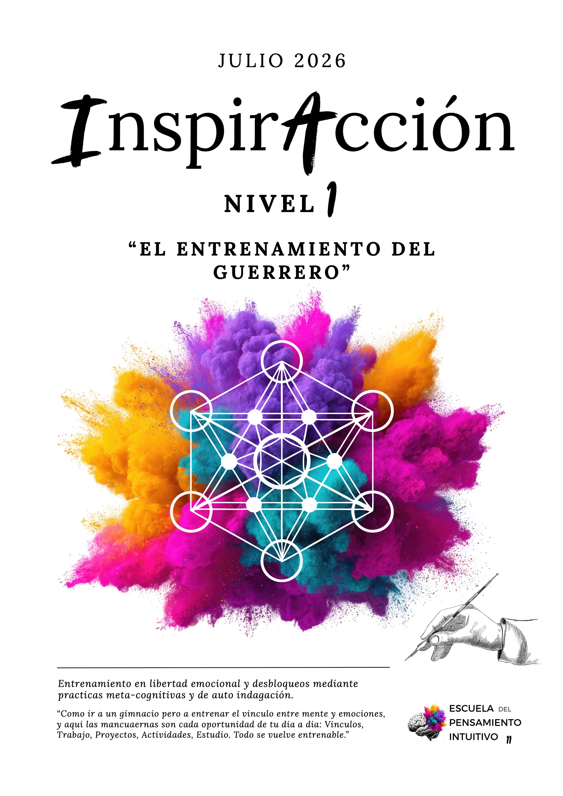

Mapeo del estado actual
Identificás los patrones que están sosteniendo tu loop. Te entrenás en reconocerlos sin juicio.
El entrenamiento del guerrero.

Vas a aprender a tomar decisiones claras, reducir el sufrimiento y el estrés, y activar los mecanismos creativos e intuitivos que están directamente asociados a los estados de abundancia.
Este programa es el primer paso de tu evolución personal y profesional. Un proceso de 3 meses diseñado para que las reacciones automáticas y las respuestas automáticas que componen tu energía sencilla y práctica se aprenda a desplegar en coherencia.
Lo vas a vivir como un proceso de entrenamiento aplicado a tu día a día. Vas a aprender herramientas concretas y prácticas fundamentales transformadoras en momentos de estrés, decisiones difíciles, ansiedad o espiritualidad que te ayude a aplicar y sostener un estilo de vida en coherencia con tu intuición.
Volvé a la abundancia de crear tu vida desde la autenticidad y la determinación de tu pensamiento intuitivo. Liberate de los condicionamientos espirituales de turno (técnicas, pasos, hábitos, prácticas).

Creador del Método Contra-Intuitivo y fundador de la Escuela del Pensamiento Intuitivo de Move Mentoring — facultad de Mentoring junto con Martín López Groutman.
Mi camino comenzó gracias al colapso y una nueva conciencia interna. Tenía 23 años, vivía de uno de los mejores de pelota y estado de cuenta sin demasiada experiencia. Familiar tuya tóxica de carácter creado, por décadas. Yo no había podido captar, no estaba comprometido a mis sueños, propietario por sentirme escuchado por mi familia. La experiencia se elevó y me cuestioné mil situaciones, derechos económicos y un agotamiento físico.
Esa fue mi etapa de iniciación. Cambié de rumbo cuando descubrí que la única forma de orientación e inversión empezaba con escuchar y comprender mi mente y emociones para crear mi salida. Cambié mi punto de vida y comprendí a Agustín como Maestro de Realidad.
Hoy, después de más de 12 años acompañando procesos de transformación, sigo aplicando el Método Contra-Intuitivo a cada estado de mi vida con la convicción de que la mejor enseñanza nace del proceso vivo del maestro. Una alquimia entre neurociencia, psicología, metafísica, fisiología y espiritualidad.
Identificás los patrones que están sosteniendo tu loop. Te entrenás en reconocerlos sin juicio.
Aprendés a organizar tu pensamiento y a verificar su efecto en tu energía cotidiana.
Las emociones como información, no como obstáculo. Cambias tu relación con lo que sentís.
Herramientas concretas para sostener tu energía a lo largo del día y prevenir el colapso.
Diseño de prácticas de evolución personal sostenibles más allá del programa.
Reconocimiento del campo energético y sus dinámicas en vínculos y proyectos.
Diseñás acciones alineadas con tu intuición, no con el deber-ser heredado.
Integración y proyección: cómo seguís sosteniendo el cambio después de los 3 meses.
Agenda tu sesión con Agustín con un 40% de descuento durante toda la cursada del programa.
Maestro de Move Mentoring. Una sesión sobre técnicas de respiración para procesos regenerativos.
Práctica de cuerpo–conciencia y regulación de la coherencia cardíaca. Profundo y sostenido.
Te quedás con todas las grabaciones del programa para retomarlo cuando quieras, sin caducidad.
Por qué la mente entrenada en el ego construye estructuras de sufrimiento y cómo el método las desarma.
El diálogo entre los dos cerebros y por qué uno gobierna mientras el otro cree decidir.
Distinciones que cortan la confusión entre experiencia, interpretación e identidad.
Identificar las narrativas internas que sostienen la repetición y cómo salir de ellas.
La práctica para acceder y sostener el estado en el que pensamiento, emoción y acción están alineados.
No es un requisito pero sí la experiencia se enriquece con la interacción. Cualquier consulta sostenida en el grupo es atendida por Agustín o por el equipo.
Las sesiones en vivo quedan grabadas si no podés conectarte. El trabajo de aplicación es diario y de baja intensidad — pequeñas prácticas durante el día y bitácora.
Las grabaciones quedan disponibles dentro del grupo, y tenés acceso de por vida. Podés enviar tus preguntas para que se respondan en la siguiente sesión.
Sí, en un marco de cuidado y confidencialidad. La aplicación del método ocurre sobre situaciones reales de la vida de cada quien.
Después del nivel 1 podés continuar con InspirAcción Nivel 2, Acompañamiento 1-a-1 o la Formación Presencial, según tu camino.
Te quedás con el acceso de por vida al material y las grabaciones. Podés retomar el grupo en próximas ediciones, según disponibilidad de plazas.
Escribime por WhatsApp y te paso los planes de pago vigentes. Hay opciones en cuotas y bonos por inscripción anticipada.
Más de 100 personas ya pasaron por el programa. Esto reportaron los certificados del Nivel 1 de la última generación.
"Aprendí a no salir corriendo de mis emociones. Hoy puedo quedarme con lo que siento y leerlo, y eso cambió todo cómo me relaciono con mi pareja y mi trabajo."
"InspirAcción me dio herramientas que no encontré en años de terapia. No es teoría, es algo que se vive y transforma todo."
"Bajé el nivel de estrés de un modo que no creía posible. Sin medicación, sin nuevas técnicas mágicas. Solo entendiendo cómo opera mi mente."
"Lo más valioso fue dejar de buscar afuera lo que siempre estuvo adentro. El método me dio el mapa para verlo."
Hablemos por WhatsApp para resolver tus dudas y reservar tu lugar en la próxima edición. Te respondo personalmente.
Quiero hablar con Agustín